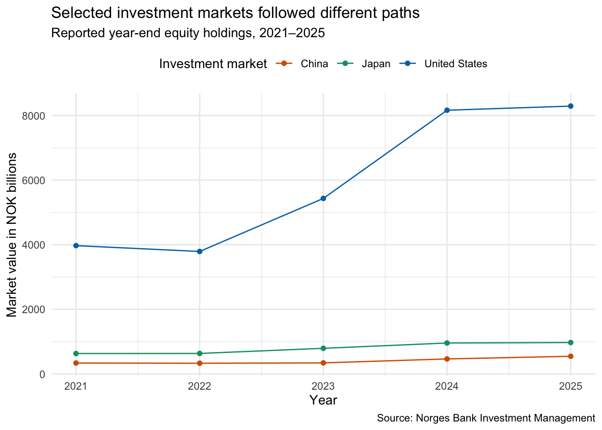
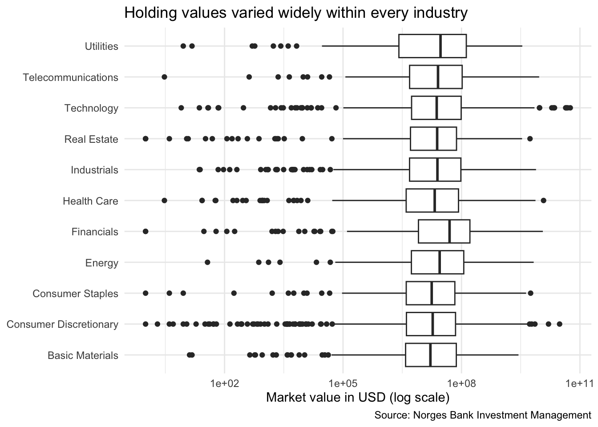
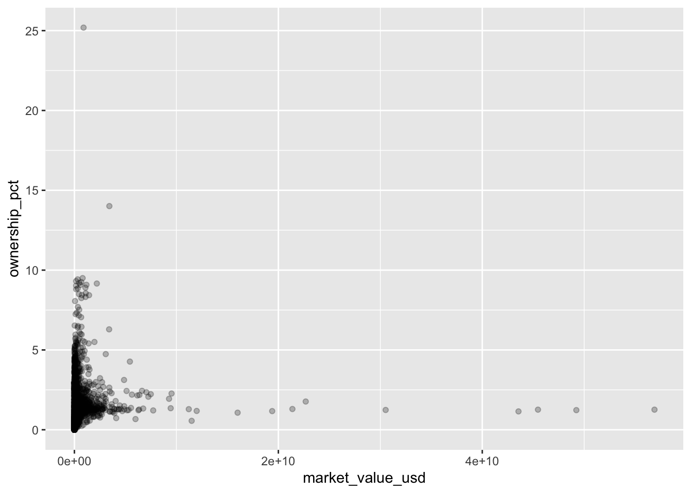
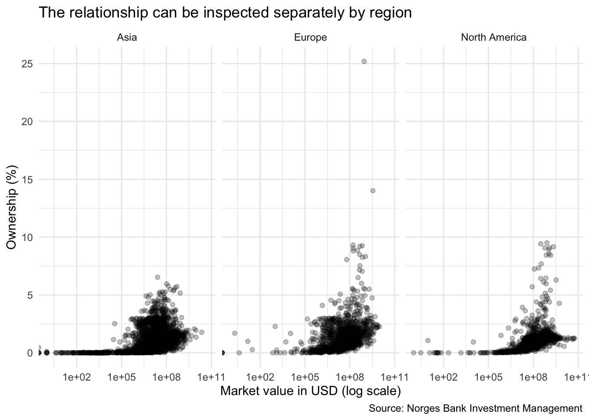

library(tidyverse)
gpfg <- read_csv("data/gpfg_5_years.csv")
gpfg_latest <- gpfg |>
filter(year == 2025)7 Visualization II
7.1 Learning objectives
By the end of this chapter, you should be able to:
- add color or fill only when it represents useful information;
- distinguish a fixed appearance from a data mapping;
- compare several time series;
- choose between grouped, stacked, and percentage-stacked bars;
- compare distributions with box plots;
- separate crowded groups with facets; and
- save a finished chart.
7.2 When does a chart need more complexity?
Chapter 6 used a line, bars, a histogram, and a scatterplot to answer four basic questions. An advanced chart should begin from one of those forms and add something only because the reporting question requires it.
| New reporting need | Possible addition |
|---|---|
| Compare several groups over time | Map a group to color |
| Compare groups directly within categories | Grouped bars |
| Show how groups contribute to a total | Stacked bars |
| Compare composition rather than totals | Percentage-stacked bars |
| Compare several distributions | Box plots |
| Reduce overlap among many groups | Facets or small multiples |
Continue in the same project
Open djr.Rproj and create 07-advanced-visualization.Rmd. Reuse data/gpfg_5_years.csv and save finished charts in outputs/.
7.3 Map a column or set an appearance
This distinction matters throughout the chapter:
geom_point(color = "#0072B2")color is outside aes(), so every point receives the same fixed color. It does not create a legend.
geom_point(aes(color = region))color is inside aes(), so values of region are mapped to different colors. Because color now represents data, ggplot2 creates a legend.
The same rule applies to fill, size, and other visual properties.
7.4 Compare several trends with color
Step 1: state the question
How did reported market value change for the United States, China, and Japan from 2021 through 2025?
Step 2: identify and prepare the columns
We need year, country, and market_value_nok. First choose a fixed set of markets, then calculate one value per country and year:
selected_countries <- c("United States", "China", "Japan")
country_trends <- gpfg |>
filter(country %in% selected_countries) |>
group_by(year, country) |>
summarise(market_value_nok = sum(market_value_nok)) |>
mutate(market_value_nok_billions = market_value_nok / 1000000000) |>
arrange(country, year)
country_trendsOne row represents one selected market in one year. The %in% operator asks whether each country belongs to the selected_countries vector created above.
Step 3: plan the visual roles
| Visual role | Column | Reason |
|---|---|---|
| X-axis | year |
Ordered time |
| Y-axis | market_value_nok_billions |
Value being compared |
| Color | country |
Separates the three time series |
| Size | None | Line position already represents value |
Step 4: begin with the essential mappings
country_trend_plot <- country_trends |>
ggplot(
aes(
x = year,
y = market_value_nok_billions,
color = country
)
) +
geom_line()
country_trend_plot
Because country is inside aes(), the chart has a color legend. Color is doing analytical work: it identifies which line belongs to which market.
Step 5: add points and labels
country_trend_plot <- country_trend_plot +
geom_point() +
labs(
title = "Selected investment markets followed different paths",
subtitle = "Reported year-end equity holdings, 2021–2025",
x = "Year",
y = "Market value in NOK billions",
color = "Investment market",
caption = "Source: Norges Bank Investment Management"
)
country_trend_plot
The color entry in labs() gives the automatically created legend a clearer title.
Step 6: add a restrained theme and palette
country_trend_plot <- country_trend_plot +
scale_color_manual(
values = c(
"United States" = "#0072B2",
"China" = "#D55E00",
"Japan" = "#009E73"
)
) +
theme_minimal() +
theme(legend.position = "top")
country_trend_plot
The manual scale gives every named market a consistent color. Add it only after confirming that the basic multi-line chart works.
7.5 Compare groups with grouped bars
Question and analysis table
How did total values differ across three industries and three regions in 2025?
region_industry <- gpfg_latest |>
filter(
region %in% c("Asia", "Europe", "North America"),
industry %in% c("Technology", "Financials", "Industrials")
) |>
group_by(industry, region) |>
summarise(market_value_nok = sum(market_value_nok)) |>
mutate(market_value_nok_billions = market_value_nok / 1000000000)
region_industryThe two conditions inside filter() are separated by a comma, so both must be true: a row must belong to one of the selected regions and one of the selected industries.
The visual roles are industry on x, value on y, and region mapped to fill. Start with the default bars:
region_industry |>
ggplot(
aes(
x = industry,
y = market_value_nok_billions,
fill = region
)
) +
geom_col()
The default is stacked. This shows the combined height and each region’s contribution, but only the bottom segment begins at the same point, so the other segments are harder to compare precisely.
For direct comparison, change one argument:
region_industry |>
ggplot(
aes(
x = industry,
y = market_value_nok_billions,
fill = region
)
) +
geom_col(position = "dodge")
position = "dodge" places the regions beside one another. The data and aesthetic mappings have not changed; only the bar arrangement has changed.
Add labels and styling after choosing the arrangement that fits the question:
region_industry |>
ggplot(
aes(
x = industry,
y = market_value_nok_billions,
fill = region
)
) +
geom_col(position = "dodge") +
scale_fill_manual(
values = c(
"Asia" = "#009E73",
"Europe" = "#E69F00",
"North America" = "#0072B2"
)
) +
labs(
title = "Regional values differed across selected industries",
x = NULL,
y = "Market value in NOK billions",
fill = "Region",
caption = "Three selected industries and regions; year-end 2025\nSource: Norges Bank Investment Management"
) +
theme_minimal() +
theme(legend.position = "top")
7.6 Compare composition with percentage bars
A different question requires a different bar arrangement:
Within each selected industry, what share of the three-region total came from each region?
Starting from the same table and mappings, change the position to "fill":
region_industry |>
ggplot(
aes(
x = industry,
y = market_value_nok_billions,
fill = region
)
) +
geom_col(position = "fill") +
scale_fill_manual(
values = c(
"Asia" = "#009E73",
"Europe" = "#E69F00",
"North America" = "#0072B2"
)
) +
labs(
title = "Regional composition differed across selected industries",
x = NULL,
y = "Share of selected-region market value",
fill = "Region",
caption = "Source: Norges Bank Investment Management"
) +
theme_minimal() +
theme(legend.position = "top")
Every bar now has the same height. This makes composition easier to compare but hides differences in total amounts. A percentage chart must not be used to support a claim about which industry has the largest total.
7.7 Compare distributions with box plots
Chapter 6’s histogram described all 2025 holding values together. Now ask:
How did holding-level value distributions differ across industries?
The source table already contains the two required columns:
| Visual role | Column |
|---|---|
| X-axis | market_value_usd |
| Y-axis | industry |
Begin without additional scales:
industry_box <- gpfg_latest |>
ggplot(
aes(
x = market_value_usd,
y = industry
)
) +
geom_boxplot()
industry_box
The large values compress most boxes near zero. Because all displayed values are positive, add a logarithmic x-axis:
industry_box +
scale_x_log10() +
labs(
title = "Holding values varied widely within every industry",
x = "Market value in USD (log scale)",
y = NULL,
caption = "Source: Norges Bank Investment Management"
) +
theme_minimal()
The line inside each box is the median. Points beyond the whiskers deserve inspection, but they are not automatically errors. Always disclose a log scale in the axis label.
7.8 Add a third variable with facets
Return to the basic relationship question from Chapter 6:
Did market value and ownership percentage vary together, and did the pattern differ across regions?
First select three regions so the comparison remains readable:
selected_holdings <- gpfg_latest |>
filter(region %in% c("Asia", "Europe", "North America"))Begin with the familiar scatterplot, adding transparency because many points overlap:
relationship_plot <- selected_holdings |>
ggplot(
aes(
x = market_value_usd,
y = ownership_pct
)
) +
geom_point(alpha = 0.25)
relationship_plot
Now add one new layer, facet_wrap(), to create a panel for each region:
relationship_plot +
scale_x_log10() +
facet_wrap(~ region) +
labs(
title = "The relationship can be inspected separately by region",
x = "Market value in USD (log scale)",
y = "Ownership (%)",
caption = "Source: Norges Bank Investment Management"
) +
theme_minimal()
The panels use the same axes, making their patterns easier to compare than many overlapping colors in one panel.
7.9 Save a finished chart
Before saving, verify that the chart matches the analysis table and that its title, period, measure, unit, and source are clear.
ggsave("outputs/country-trends.png", country_trend_plot)The filename and chart object are enough here. Width, height, and resolution are optional controls for a later publication requirement.
Interactive charts are optional
Interaction can add tooltips, filters, and zooming, but it also introduces new packages and HTML-specific behavior. First make a correct, readable static chart. Interactive graphics can be considered later when interaction helps a specific reporting task.
7.10 Practice
Choose one of the following:
- Compare three industries across five years with colored lines.
- Compare selected regions with grouped and stacked bars, then explain which arrangement better answers your question.
- Add facets to a relationship plot and explain what became easier to see.
For every version, state the question, list the columns, identify the visual roles, show the basic plot first, and explain every added layer.
7.11 Takeaways
| Function or option | What it adds |
|---|---|
color = column inside aes() |
Maps a column to line or point color |
fill = column inside aes() |
Maps a column to bar fill |
Fixed color outside aes() |
Changes appearance without representing data |
position = "dodge" |
Places groups beside one another |
position = "fill" |
Converts stacked bars to equal-height composition bars |
geom_boxplot() |
Compares numeric distributions across groups |
scale_x_log10() |
Spreads positive values across a logarithmic axis |
facet_wrap() |
Creates a separate panel for each group |
scale_color_manual() |
Assigns deliberate colors to named groups |
ggsave() |
Saves a completed chart |
Want more control?
The official ggplot2 reference documents additional scales, legends, themes, annotations, and saving options. Add them one at a time and only when they serve the reporting question.